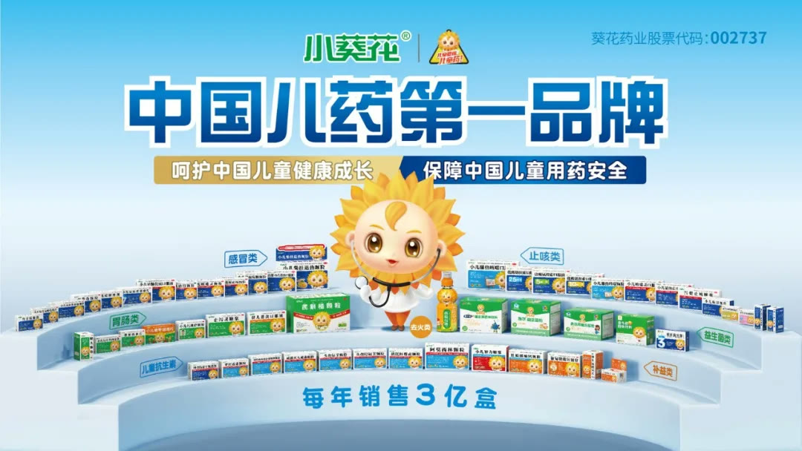
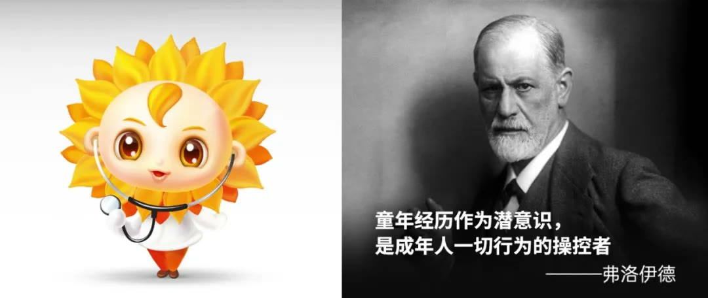
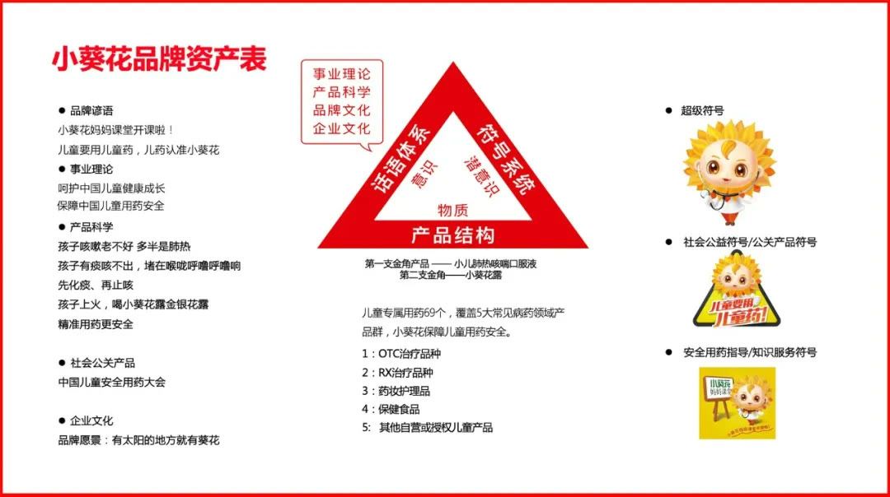

01 · 战略
开辟儿童药事业价值版图
项目不只推广单品，而是把儿童用药需求组织为长期事业，明确企业应持续解决的社会问题。

02 · 公关
把社会责任设计成企业公关产品
儿童健康知识与公益行动被持续组织，使企业专业能力以公共价值进入社会。

03 · 品牌
品牌三角形统一产品、符号和话语
品牌战略把企业能力、儿童用药与家长认知组织起来，形成稳定传播解码器。

04 · 渠道
让品牌流量与渠道共同受益
强品牌降低消费者选择成本，也为终端提供更清晰的产品与健康沟通工具。